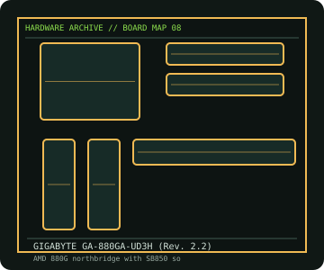

[ INDIVIDUAL COMPONENT // MOTHERBOARDS ]
GIGABYTE GA-880GA-UD3H (Rev. 2.2)
ATX 880G/SB850 board with integrated Radeon HD 4250 graphics, DDR3, SATA 6 Gb/s and legacy expansion. This entry identifies one product model; revision and firmware qualifications are stated below.

IDENTIFICATION: Check the PCB silkscreen, printed revision, assembly code, and firmware identifier on the actual board. Similar model names and PCB revisions may use different specifications or firmware.
Specifications
| Catalog subcategory | AMD Socket platforms |
|---|---|
| Exact board / model | GIGABYTE GA-880GA-UD3H (Rev. 2.2) |
| Era / platform | AMD AM3 880G desktop platform, 2010 |
| CPU and socket | Socket AM3 AMD Phenom II, Athlon II and Sempron processors as listed for PCB revision 2.2; confirm BIOS and TDP support per CPU |
| Chipset / controller | AMD 880G northbridge with SB850 southbridge |
| Memory | Four DDR3 DIMM slots, dual-channel, up to 16 GB listed for the board; use validated DIMMs and the manual's population guidance |
| Expansion and connectivity | ATX; two PCIe x16-length slots, three PCIe x1 and two legacy PCI; six SATA 6 Gb/s, rear VGA/DVI/HDMI, USB 3.0, Gigabit Ethernet and onboard audio |
| Firmware | GIGABYTE BIOS/support files are separated by revision. Use the Rev. 2.2 downloads and CPU support list, not files for Rev. 2.0 or 2.1. |
Compatibility and revision notes
The integrated graphics outputs require an appropriate CPU/platform configuration. CrossFire slot bandwidth is shared; use the exact manual for PCIe and SATA lane rules. Socket AM3 and later AM3+ processors are not automatically interchangeable.
Physical socket fit alone does not establish compatibility. Verify the exact processor support list, minimum BIOS, memory population rules, case dimensions, power connectors and shared-lane behavior in the cited model documentation before installation.
Preservation and repair
Inspect the AM3 socket for bent pins, the chipset heatsink and fan headers, and the SATA/USB 3.0 controller area. Replace the CR2032 only after recording firmware settings; check electrolytic capacitors and board mounting before applying power.
For an archive record, photograph the PCB and labels before cleaning; note serial/date codes, BIOS/BMC versions, accessories, known faults, repairs, and test conditions. Use ESD-safe handling and never apply power with loose conductive hardware beneath the board.
Sources & further reading
- GIGABYTE — GA-880GA-UD3H Rev. 2.2 supportManufacturer's revision-specific manual, BIOS and CPU support resources.
- GIGABYTE — GA-880GA-UD3H Rev. 2.2 specificationManufacturer model page; compare revision and specifications to PCB markings.
Manufacturer model documentation is the primary reference; confirm the document revision and board markings when specifications vary by revision or SKU.